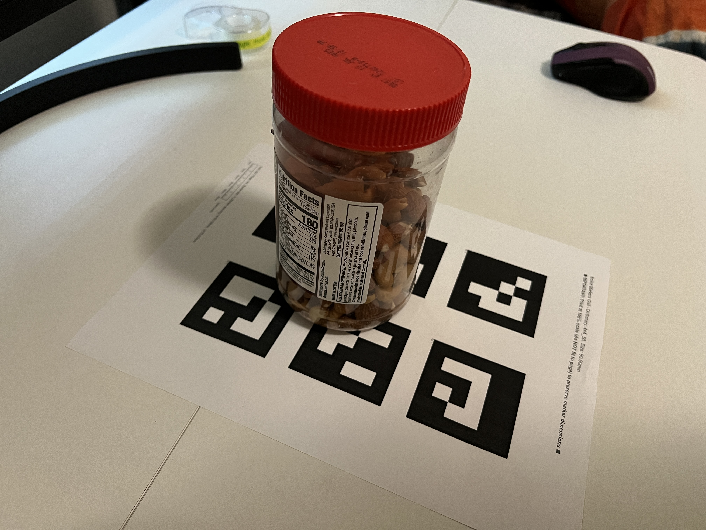
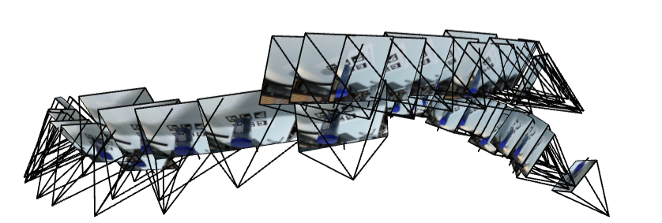
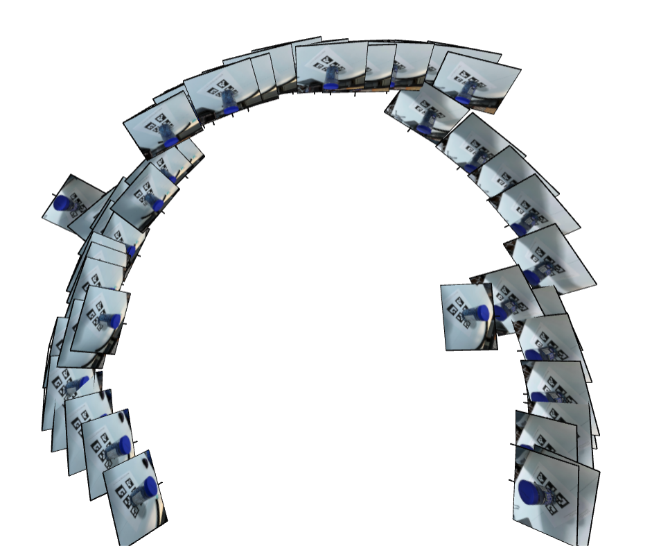

To train a NeRF, we first need a dataset of 2D images paired with accurate camera poses in world coordinates.
I captured 30+ images of an ArUco marker grid using my iPhone and used
OpenCV's cv2.calibrateCamera() to compute the camera
intrinsics and distortion coefficients.
For each image, I placed a single ArUco tag next to the object of interest
(a copy of the board game Coup). With the tag's known physical size and
the calibrated intrinsics, I applied cv2.solvePnP() to
recover the camera's extrinsic parameters (rotation and translation).
Finally, I used cv2.undistort() to correct lens distortion
before feeding the images into the NeRF pipeline.
Screenshots of the camera cloud in Viser showing camera frustums' poses and images:



To fit a neural field to a 2D image, I implemented a multilayer perceptron (MLP) with sinusoidal positional encoding. Below are the key architectural details:
The sinusoidal positional encoding maps 2D coordinates to a higher dimensional space:
PE(x) = [x, sin(2⁰πx), cos(2⁰πx), sin(2¹πx), cos(2¹πx), ..., sin(2⁹πx), cos(2⁹πx)]
The model is evaluated using Peak Signal-to-Noise Ratio (PSNR):
PSNR = 10 · log₁₀(1 / MSE)